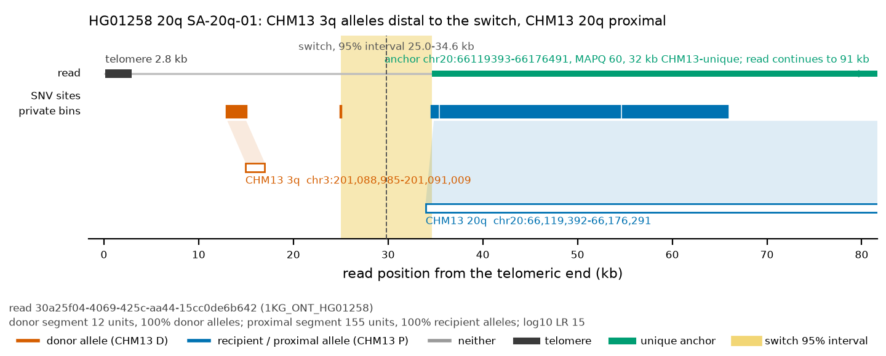
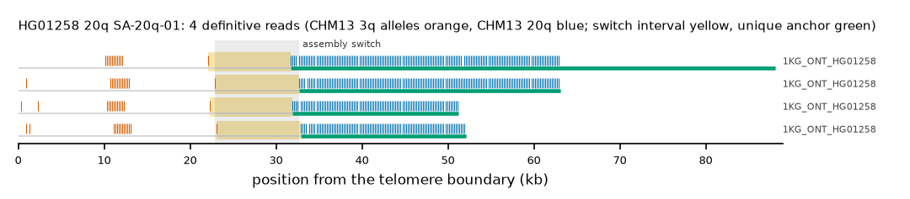

HG01258 20q: SA-20q-01
Claim HG01258|20q|SA-20q-01. All claims
- cohort
- 1000 Genomes ONT
- individual
- HG01258
- haplotype
- hap2
- arm
- 20q
- allele
- SA-20q-01 (foreign)
- model
- donor CHM13 3q, proximal CHM13 20q, recipient CHM13 20q, pattern DP
- claimed end(s)
HG01258#2#CM088150.1#R- assembly switch
- 31,422 bp from the telomere boundary; on CHM13 chr20:66177732; own-window projection 22900-32700 bp
- v1 verdict
- confirmed (confirmed)
- definitive tier
- definitive
- reads
- 4 conclusive switch-concordant, 0 discordant, 0 contradicting, 1 consistent; 4 definitive (1KG_ONT_HG01258)
- by tier
- definitive:4;consistent:1
- source
- https://ftp.1000genomes.ebi.ac.uk/vol1/ftp/data_collections/1KG_ONT_VIENNA/t2t/HG01258.t2t.cram
- note
- confirmed:robust; keep


Conclusive and contradicting reads (4)
1 further reads are consistent (switch test passed, but no terminal telomere, anchor or integrity); they are
listed in reads.tsv.gz. Switch: 95% interval in subtelomere coordinates (kb from the
telomere boundary) and projected on CHM13 20q. Each samtools command prints the read's record
from its public file (CRAM: add the CHM13 v2.0 FASTA as -T).
| read | dataset | tier | length | switch (subtelomere, kb) | switch on CHM13 | donor units / purity | proximal units / purity | anchor (CHM13, MAPQ, unique) | own-assembly best end | fetch |
|---|---|---|---|---|---|---|---|---|---|---|
30a25f04-4069-425c-aa44-15cc0de6b642 | 1KG_ONT_HG01258 | definitive | 90,992 | 22.1-31.7 | chr20:66176491-66186091 | 12 / 1.00 | 155 / 1.00 | chr20:66119393-66176491, 60, 32.0 kb | HG01258#2#CM088150.1#R (95.4%) ✓ | samtoolssamtools view -F 0x900 -T chm13v2.0.fa.gz -X 'https://ftp.1000genomes.ebi.ac.uk/vol1/ftp/data_collections/1KG_ONT_VIENNA/t2t/HG01258.t2t.cram' 'https://ftp.1000genomes.ebi.ac.uk/vol1/ftp/data_collections/1KG_ONT_VIENNA/t2t/HG01258.t2t.cram.crai' 'chr20:66205256-66210255' | awk -v r='30a25f04-4069-425c-aa44-15cc0de6b642' '$1==r' |
20484773-6243-40c1-95ec-6c45f8df6777 | 1KG_ONT_HG01258 | definitive | 65,679 | 22.9-32.7 | chr20:66176397-66186197 | 14 / 1.00 | 151 / 1.00 | chr20:66145811-66176395, 60, 22.4 kb | HG01258#2#CM088150.1#R (97.2%) ✓ | samtoolssamtools view -F 0x900 -T chm13v2.0.fa.gz -X 'https://ftp.1000genomes.ebi.ac.uk/vol1/ftp/data_collections/1KG_ONT_VIENNA/t2t/HG01258.t2t.cram' 'https://ftp.1000genomes.ebi.ac.uk/vol1/ftp/data_collections/1KG_ONT_VIENNA/t2t/HG01258.t2t.cram.crai' 'chr20:66205256-66210255' | awk -v r='20484773-6243-40c1-95ec-6c45f8df6777' '$1==r' |
5323223e-1ba4-43b9-9cab-2fa9bb01dfc2 | 1KG_ONT_HG01258 | definitive | 53,588 | 22.3-31.9 | chr20:66176471-66186071 | 14 / 1.00 | 96 / 1.00 | chr20:66157062-66176469, 60, 11.2 kb | HG01258#2#CM088150.1#R (96.5%) ✓ | samtoolssamtools view -F 0x900 -T chm13v2.0.fa.gz -X 'https://ftp.1000genomes.ebi.ac.uk/vol1/ftp/data_collections/1KG_ONT_VIENNA/t2t/HG01258.t2t.cram' 'https://ftp.1000genomes.ebi.ac.uk/vol1/ftp/data_collections/1KG_ONT_VIENNA/t2t/HG01258.t2t.cram.crai' 'chr20:66205256-66210255' | awk -v r='5323223e-1ba4-43b9-9cab-2fa9bb01dfc2' '$1==r' |
65ebf806-a239-4e26-b3b2-afa852384110 | 1KG_ONT_HG01258 | definitive | 59,860 | 23.1-32.9 | chr20:66176430-66186230 | 14 / 1.00 | 95 / 1.00 | chr20:66157111-66176428, 60, 11.1 kb | HG01258#2#CM088150.1#R (97.1%) ✓ | samtoolssamtools view -F 0x900 -T chm13v2.0.fa.gz -X 'https://ftp.1000genomes.ebi.ac.uk/vol1/ftp/data_collections/1KG_ONT_VIENNA/t2t/HG01258.t2t.cram' 'https://ftp.1000genomes.ebi.ac.uk/vol1/ftp/data_collections/1KG_ONT_VIENNA/t2t/HG01258.t2t.cram.crai' 'chr20:66205256-66210255' | awk -v r='65ebf806-a239-4e26-b3b2-afa852384110' '$1==r' |
Files and IGV
This is a showcase claim: its reads are in the repository under evidence/showcase/HG01258__20q__SA-20q-01/ with IGV sessions CHM13 v2.0 (loci chr3:201060310-201105948 and chr20:66120031-66210255) and own assembly, and a what-you-should-see note. Split at the switch, the distal segments of 4 of 4 showcase reads align to CHM13 3q and the proximal segments of 4 to CHM13 20q at MAPQ 60.
Re-derive this verdict
git clone https://github.com/jlanej/human-subtelomere-atlas && cd human-subtelomere-atlas
evidence/replicate_claim.sh 'HG01258|20q|SA-20q-01'The script fetches the cited reads from the public source by region and read ID, re-runs the frozen criteria and compares every per-read and claim verdict with this page (details).